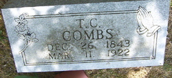

26 December 1843 – 11 March 1922
26 December 1843 · Date on the grave marker and FamilySearch profile; a 1870 census index gives age 23 and Tennessee birth, and a family history says 1846, so the birth year is disputed.
24 May 1870 · A FamilySearch-indexed Indiana marriage license names Thomas Combs and Elizabeth Williams; not yet bridged conclusively to this Thomas.
1885 · FamilySearch and the Casey County Combs family compilation report a marriage to Elizabeth Edwards in Liberty; source spellings/date vary by one day.
11 March 1922 · Date on the grave marker and Find a Grave; family-history text gives 13 March.
Thomas C. Combs is identified by the grave marker and Find a Grave as born 26 December 1843 and died 11 March 1922, buried at Raney Cemetery in Casey County. FamilySearch’s compiled profile reports Casey County birth and death and names James Henry “Joe” Combs and Lucy Huddleston as his parents.
A Casey County Combs-family history, excerpted by Combs Researcher Birdie McNutt from Hazel Mozell Nelson Russell’s “James H. Combs Family 1822,” identifies Thomas as a son of James H. and Lucy Huddleston and as the father of Maud Allen Combs. It gives his birth as 1846 in one passage and his death as 13 March 1922, conflicting with the marker. A 1870 census index cited by WikiTree lists a Thomas Combs, age 23, born Tennessee, in Lee County, Kentucky; it is compatible with a 1846/47 birth but still needs identity review.
The marriage record evidence is not yet reconciled: FamilySearch and the Combs-family page report an 1885 Casey County marriage to Elizabeth Edwards (the date appears as 12 or 13 December), while an indexed 24 May 1870 Indiana marriage license names Thomas Combs and Elizabeth Williams. These may reflect the same couple, another same-name couple, or a later marriage; the profile preserves both claims without silently combining them.
The grave-marker image and memorial provide a clear image of Thomas’s marker, not a portrait. Marker/Find a Grave dates (1843 and 11 March 1922) conflict with the Combs-family narrative (1846 and 13 March 1922). Preserve both.
The 1870 Indiana marriage license entry for Thomas Combs and Elizabeth Williams precedes Maude’s birth and the later Casey County marriage index. It is not assumed to be the same couple without an identity bridge.
The 1885 Casey marriage is reported in FamilySearch and the Combs-family page; the indexed date appears as 12 versus 13 December in secondary citations. The original license image has not been reviewed.
The Find a Grave relationship labels are collaborator-entered; the Casey County Combs narrative is a derivative family compilation. Neither is a substitute for original parent-child records.
No DNA information added.
Parent couple profile for James Logan Campbell × Maude Allen Combs. Thomas’s birth/death dates and marriage chronology retain the source conflicts rather than selecting one silently.
Created 28 November 2026: Generation VIII parent profile; reciprocal child/spouse links and available marker or document images added with source attribution.
No verified profile-contribution link is currently attached to this page.